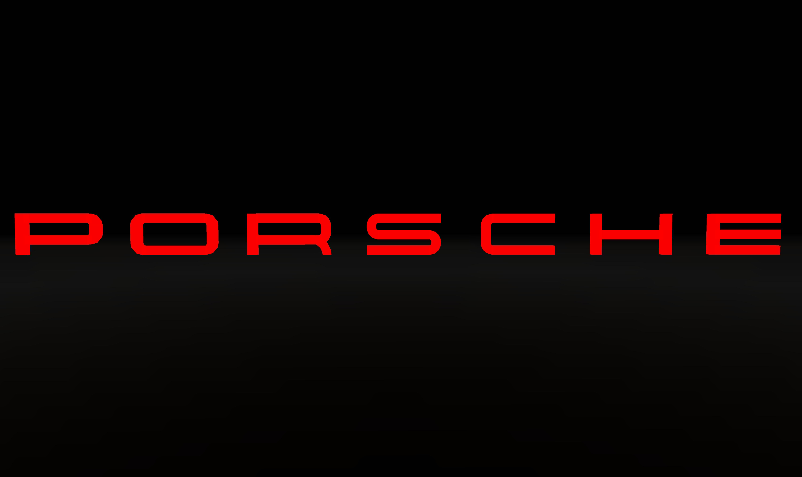

PORSCHE WORLD
"In a World Full of Cars, Be a Porsche."
This article is about the automotive brand and manufacturer, Porsche AG. For the holding company that is the majority owner of Volkswagen Group, see Porsche SE. For other uses of Porsche, see Porsche (disambiguation).
Dr. Ing. h.c. F. Porsche AG, usually shortened to Porsche, is a German automobile manufacturer specializing in luxury, high-performance sports cars, SUVs and sedans, headquartered in Stuttgart, Baden-Württemberg, Germany. The company is owned by Volkswagen AG, a controlling stake of which is owned by Porsche Automobil Holding SE. Porsche's current lineup includes the 718, 911, Panamera, Macan, Cayenne and Taycan.

Porsche....There is no Substitute
| Ferdnand Porsche |
What is the Porsche 911 GT3 RS?
Say hello to the latest member of the Porsche Sportmade family. An athlete both on and off the track, this all-new aerodynamic wonder follows its 2013 predecessor – the 911 GT3 RS (Type 991 II) – and is presented in a more radical form than ever before, thanks to its lightweight construction and incredible attention to detail. Never before has Porsche put such levels of effort into the development of one of its Porsche GT sportscars.
It’s easy to get a sense of just how much went into developing the 911 GT3 RS when listening to Andreas Preuninger, Director GT Model Line at Porsche, talking about the car. “I don’t remember any project where we spent more days and nights – countless hours – inside the wind tunnel,” he explains, adding that the end result proves that the long hours were worth it. “It offers such a rewarding driving experience on the track. It puts a smile on my face, and on all of the development drivers’ too, every time we drive it.

What’s the difference between the 911 GT3 and the 911 GT3 RS?
The 911 GT3 and 911 GT3 RS are cars that have both been developed to make every second count, but that RS suffix – standing for ‘Rennsport’ or ‘racing’ – signals the intentions of the 911 GT3 RS from the moment you see it written along its flanks. It takes a mere glance to recognise the wider body and huge rear wing – which rises even above the roofline of the car. An imposing, sporty look. Designed to push things harder and for longer when you are on the track, with 15PS more available to you, and a wealth of aerodynamic detailing, it all adds up to triple the downforce when compared to the 911 GT3. This is a serious track day vehicle. No compromises have been made.

Is The 911 GT3 RS a Track Car Only?
Wherever you go, it goes. The street-legal 911 GT3 RS is as happy on the road as the racetrack. Alongside its phenomenal performance, overall drivability has been improved, too. The electronic damping control system actively and continuously adjusts based on current road conditions and driving style. At low speeds, this system steers the rear wheels in the opposite direction to the front for increased agility, especially through bends. At high speeds, the rear wheels are steered in the same direction as the front for optimal stability – perfect for when it comes to overtaking on the racetrack. With this kind of all-round performance, the 911 GT3 RS proves itself to be an exceptionally versatile sportscar.

What’s so Special about The Motorsport-Inspired Interiors?
Proving that comfort and racing exhilaration can go hand-in-hand, climbing aboard reveals sporty credentials worthy of the most elite athlete. The full bucket seats are made of carbon fibre reinforced plastic (CFRP) with a carbon-weave finish and black leather cover. GT3 RS lettering is embroidered on the headrests, while the seat centre sections come in black perforated Race-Tex with contrasting underlay. Adaptive, 18-way electric sports seats are available as an option, and the interiors can be furnished with advanced leather/Race-Tex features and contrasting Guards Red or GT Silver colours on request.

Related Topics